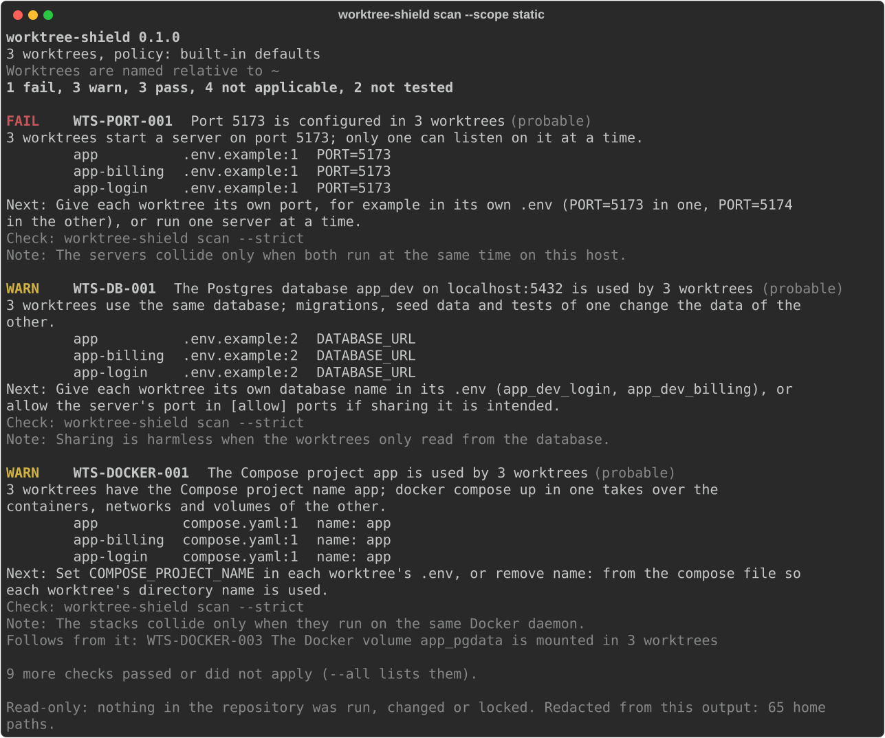

Find the ports, databases and Docker projects your worktrees share
Git worktrees give every agent its own checkout, not its own infrastructure. Worktree Shield audits the worktrees you already have, however they were made, and shows each shared resource with the file and line it comes from.
uv tool install git+https://github.com/BhuwanJoshi-01/worktree-shield
The example repository: three worktrees made from one branch.
| Worktree | Port | Database | Compose project |
|---|
What it finds
Each shared resource is a finding with a stable code, the evidence for every worktree,
and how certain the collision is. worktree-shield explain CODE tells you more about one.
- Listen ports
WTS-PORT-001Dev servers on the same port: only one can listen at a time. With a process already holding it,
WTS-PORT-002confirms it. - Databases
WTS-DB-001The same database on the same server: one worktree’s migrations and seed data change the other’s.
- Compose projects
WTS-DOCKER-001One project name:
docker compose upin one worktree takes over the other’s containers. - Container names and volumes
WTS-DOCKER-002/003Fixed
container_namevalues and named volumes that every stack mounts. - Absolute paths
WTS-PATH-001Upload, cache and output folders outside the worktree that each one writes to.
Read from .env.example (and .env when you opt in), package.json
scripts, Vite configs, pyproject.toml tasks, Compose files, Procfiles and dev containers, and the
ports running processes listen on. Everything that is read.
It says how sure it is
Two worktrees that configure the same port will collide only if both servers run. So a finding from configuration is probable; it becomes confirmed when a running process, found by its working directory, already holds the port. Ports that only might overlap, such as a wildcard and a specific address, are possible.
Sharing on purpose is fine: allow one Postgres for everyone in .worktree-shield.toml, and
--strict fails only on what your policy denies.
- confirmed
- A process from another worktree listens on the port right now.
- probable
- The configuration of two worktrees names the same resource.
- possible
- The resources may overlap; it depends on how they are reached.
The scan, as your terminal shows it
The example repository has three worktrees that start a server on 5173, use the database
app_dev and share one Compose project. Every line of evidence names the worktree, the file
and the line.
worktree-shield scan # all worktrees, read-only
worktree-shield scan --strict # exit 1 when a finding fails
worktree-shield plan # one change per worktree; never applied
worktree-shield resources # every resource each worktree declares
worktree-shield report -f sarif -o conflicts.sarifTry it on a repository built to collide:
python examples/conflicting-worktrees/build.py /tmp/wts-demo.

In CI and before an agent starts
A CI checkout is a single worktree, so the GitHub Action checks your branch out next to another ref and
reports what the two would share, as SARIF for code scanning. On your machine,
scan --strict --format json is a preflight an agent can run before it starts a server.
In CI the scan is static: the processes on a runner say nothing about your machine.
- uses: actions/checkout@v7
- uses: BhuwanJoshi-01/worktree-shield@v0.1.0
with:
compare-with: main
strict: "true"
- uses: github/codeql-action/upload-sarif@v4
if: always()
with:
sarif_file: worktree-shield.sarifWhat it never does
- Run your code. Package scripts, Git hooks, Vite configs and Compose are parsed as data, never executed. Docker doesn’t need to be running.
- Change anything. No writes to your worktrees or
.git, no locks, no pruning, no killed processes, no touched databases. - Print secrets. Database URLs are cut to host, port and name as they are read;
.envfiles are read only when you opt in. - Phone home. No network access, no telemetry.
Creating worktrees with their own ports instead? workz and worktree-compose do that. Worktree Shield creates nothing; it audits whatever is already there.